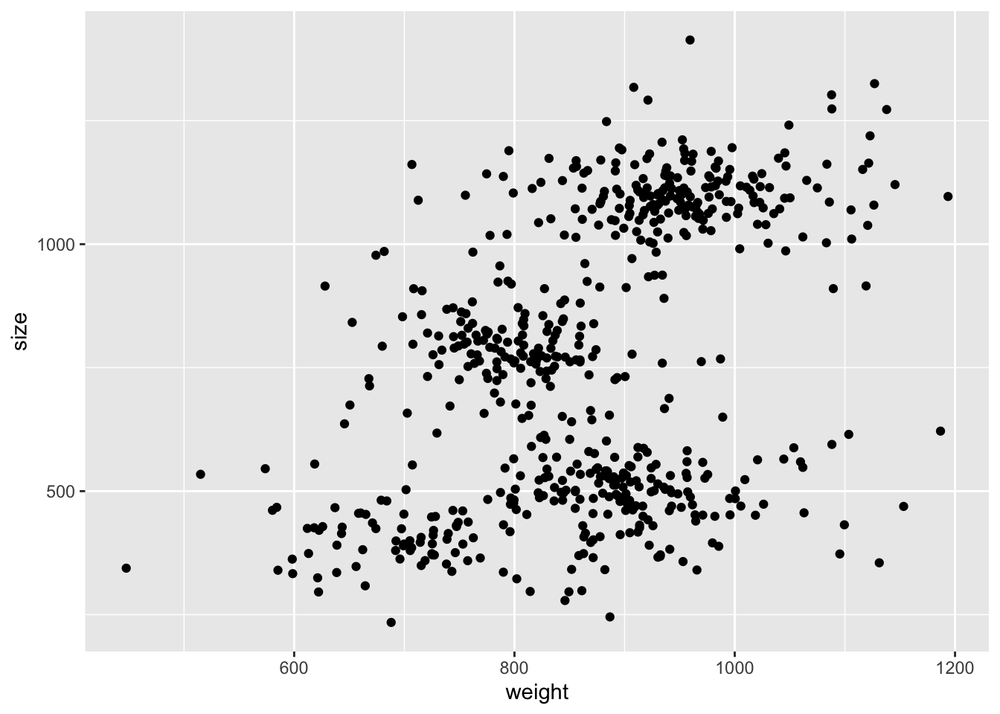
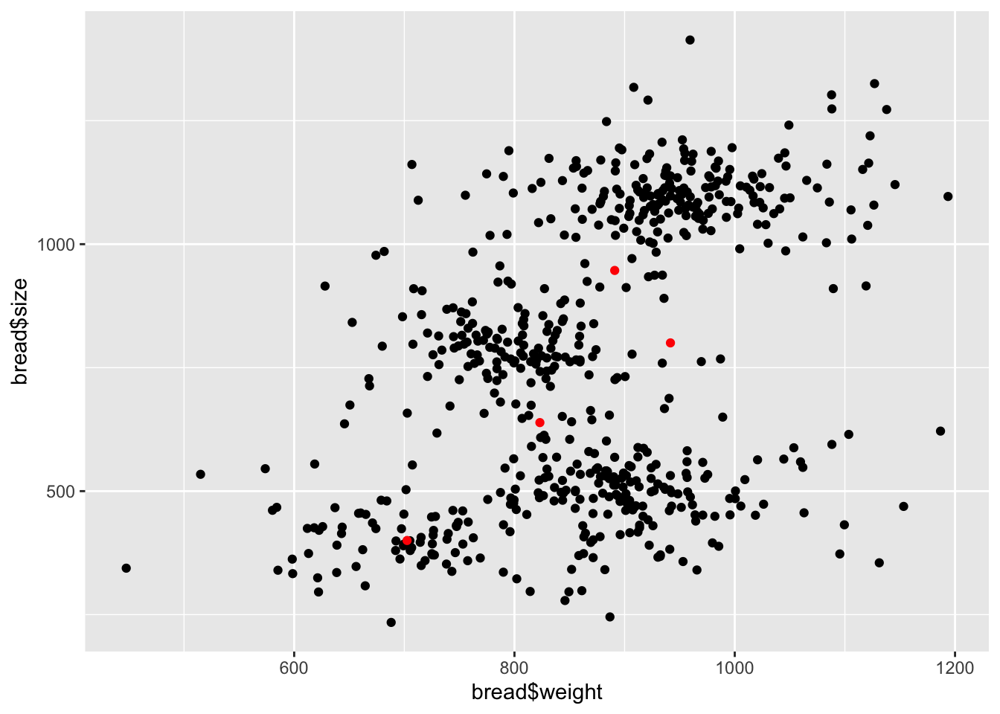

Chapter 13 JAGS lab - Gaussian Mixture Model
A 5-stars hotel stocks up a whole bunch of bread loafs from a local bakery on a daily bases. Every stock of loafs counts 50 pieces, each of which varies slightly, but not trascurably, in size (volume in cm3) and weight (grams). This happens because the bakery doesn’t have a precise recipe and therefore every baker produces different kinds of bread.
You get the chance of measuring weight and size of each loaf the hotel buys for an entire month and from those data you want to estimate the number of bakers that worked at the bakery in that month.
Read the data provided in the bread.csv file, get some insights
on the nature of the data (summaries, plots, etc.) and write
down a JAGS model which captures it. You should define a
Gaussian Mixture Model, just like the one from previous lecture,
but with the number of components \(K\) (number of bakers) as parameter.
Hint: Maybe plot the data and get a feeling of a range of components you would like to try out. You can compare them in several ways, for instance preferring the one that gives the largest log-likelihood, printing the DIC (similar to AIC, add the flag
DIC = TRUEin thejags()function call) or just by checking how many clusters give accurate estimates.
Some notes that may be useful for writing the model:
note that
ddirich(alpha)is the JAGS call for a Dirichlet distribution with concentrationalpha.avoid the label switching problem by sorting the current clusters probabilities properly. The call
order(v)is an alternative tosort(v), such thatv[order(v)] == sort(v)(gives a permutation of the indices that orders the elements of a vector in ascending order).to inspect the likelihood, you can define a new model node e.g.
complete_loglikas such:model { # # ... here's the main model # # likelihood for (i in 1:N) { loglikx[i] <- logdensity.norm(x[i], mux_clust[clust[i]], taux) logliky[i] <- logdensity.norm(y[i], muy_clust[clust[i]], tauy) } complete_loglik <- sum(loglikx) + sum(logliky) }
The simulation shouldn’t take more than one/two minute. If it runs for too long it’s either unnecessary or wrong. Decrease the number of iterations/chains.
Good luck!
set.seed(42)
# read data
library(readr)
library(tibble)
library(ggplot2)
bread <- read_csv("./datasets/bread.csv")## Rows: 600 Columns: 2
## ── Column specification ────────────────────────────────────────────────────────
## Delimiter: ","
## dbl (2): weight, size
##
## ℹ Use `spec()` to retrieve the full column specification for this data.
## ℹ Specify the column types or set `show_col_types = FALSE` to quiet this message.bread %>%
ggplot(aes(weight, size)) +
geom_point()
library(R2jags)
model_code <- "
model {
# Likelihood:
for(i in 1:N) {
x[i] ~ dnorm(mux[i], taux)
y[i] ~ dnorm(muy[i], tauy)
mux[i] <- mux_clust[clust[i]]
muy[i] <- muy_clust[clust[i]]
clust[i] ~ dcat(lambda[1:K]) # categorical
}
# priors
taux ~ dgamma(0.01, 0.01)
tauy ~ dgamma(0.01, 0.01)
sigmax <- 1 / sqrt(taux)
sigmay <- 1 / sqrt(tauy)
for (k in 1:K) {
mux_clust_raw[k] ~ dnorm(0, 10^-6)
muy_clust_raw[k] ~ dnorm(0, 10^-6)
}
perm <- order(mux_clust_raw) # same ordering for both!
for (k in 1:K) {
mux_clust[k] <- mux_clust_raw[perm[k]]
muy_clust[k] <- muy_clust_raw[perm[k]]
}
lambda[1:K] ~ ddirch(ones)
# likelihood
for (i in 1:N) {
loglikx[i] <- logdensity.norm(x[i], mux_clust[clust[i]], taux)
logliky[i] <- logdensity.norm(y[i], muy_clust[clust[i]], tauy)
}
complete_loglik <- sum(loglikx) + sum(logliky)
}
"
K <- 4 # change this and see what's best
model_data <- list(
x = bread$weight, y = bread$size, ones = rep(1, K),
K = K, N = nrow(bread)
)
model_params <- c(
"mux_clust", "muy_clust", "sigmax", "sigmay"
# ,"clust"
, "lambda", "complete_loglik"
)
model_inits <- function() {
list(
mux_clust_raw = rnorm(K, 500, 1e4), muy_clust_raw = rnorm(K, 500, 1e4),
taux = rgamma(0.1, 0.1), tauy = rgamma(0.1, 0.1),
clust = sample(1:K, size = nrow(bread), replace = TRUE, prob = rep(1 / K, K))
)
}
model_run <- jags(
data = model_data,
parameters.to.save = model_params,
inits = model_inits,
model.file = textConnection(model_code),
n.chains = 2,
n.iter = 5000,
n.burnin = 1000,
n.thin = 5,
DIC = TRUE
)## Compiling model graph
## Resolving undeclared variables
## Allocating nodes
## Graph information:
## Observed stochastic nodes: 1200
## Unobserved stochastic nodes: 611
## Total graph size: 4248
##
## Initializing modelmodel_run$BUGSoutput## Inference for Bugs model at "4", fit using jags,
## 2 chains, each with 5000 iterations (first 1000 discarded), n.thin = 5
## n.sims = 1600 iterations saved
## mean sd 2.5% 25% 50% 75% 97.5% Rhat
## complete_loglik -6940.6 49.1 -7013.7 -6987.2 -6941.2 -6892.4 -6877.1 9.1
## deviance 13881.1 98.2 13754.3 13784.8 13882.4 13974.5 14027.3 9.1
## lambda[1] 0.1 0.0 0.1 0.1 0.1 0.2 0.2 3.8
## lambda[2] 0.3 0.1 0.2 0.2 0.3 0.3 0.4 5.4
## lambda[3] 0.3 0.1 0.2 0.2 0.3 0.3 0.4 6.5
## lambda[4] 0.3 0.0 0.2 0.3 0.3 0.3 0.4 4.4
## mux_clust[1] 702.5 19.8 656.9 691.5 705.4 716.1 734.4 1.8
## mux_clust[2] 823.1 25.6 787.4 798.1 824.7 847.5 859.2 9.1
## mux_clust[3] 891.0 42.2 839.2 848.8 893.5 932.8 940.7 17.8
## mux_clust[4] 941.6 9.1 926.6 934.3 940.4 948.3 960.0 3.1
## muy_clust[1] 400.1 14.2 370.3 390.1 401.3 410.4 424.3 2.1
## muy_clust[2] 638.8 151.5 475.4 487.5 628.9 789.9 801.0 48.6
## muy_clust[3] 946.8 153.7 780.9 793.5 942.1 1100.3 1109.0 53.7
## muy_clust[4] 800.1 301.9 487.5 498.3 752.2 1101.7 1110.7 97.7
## sigmax 85.8 7.1 75.2 79.1 85.6 92.2 97.4 5.7
## sigmay 72.5 2.5 67.9 70.8 72.4 74.1 77.7 1.0
## n.eff
## complete_loglik 2
## deviance 2
## lambda[1] 2
## lambda[2] 2
## lambda[3] 2
## lambda[4] 2
## mux_clust[1] 4
## mux_clust[2] 2
## mux_clust[3] 2
## mux_clust[4] 3
## muy_clust[1] 4
## muy_clust[2] 2
## muy_clust[3] 2
## muy_clust[4] 2
## sigmax 2
## sigmay 120
##
## For each parameter, n.eff is a crude measure of effective sample size,
## and Rhat is the potential scale reduction factor (at convergence, Rhat=1).
##
## DIC info (using the rule, pD = var(deviance)/2)
## pD = 330.3 and DIC = 14211.4
## DIC is an estimate of expected predictive error (lower deviance is better).gmm_mcmc <- as.mcmc(model_run)
# save to pdf
# pdf(file = "./lab3/mcmc_out.pdf")
# plot(gmm_mcmc)
# dev.off()mux <- model_run$BUGSoutput$mean$mux_clust
muy <- model_run$BUGSoutput$mean$muy_clust
ggplot() +
geom_point(aes(bread$weight, bread$size)) +
geom_point(aes(mux, muy), col = "red")
## tweaking contrast## tweaking pscl